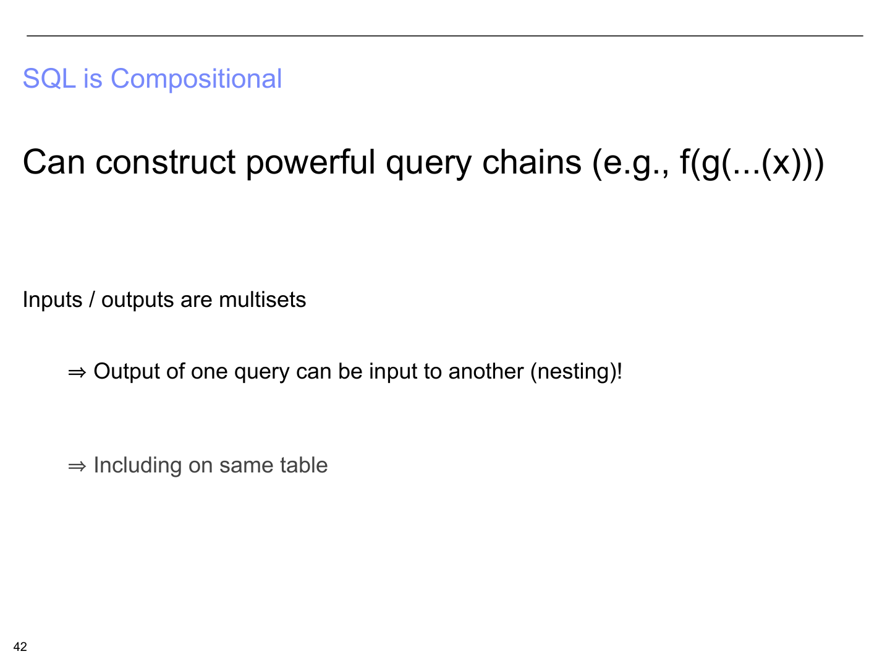
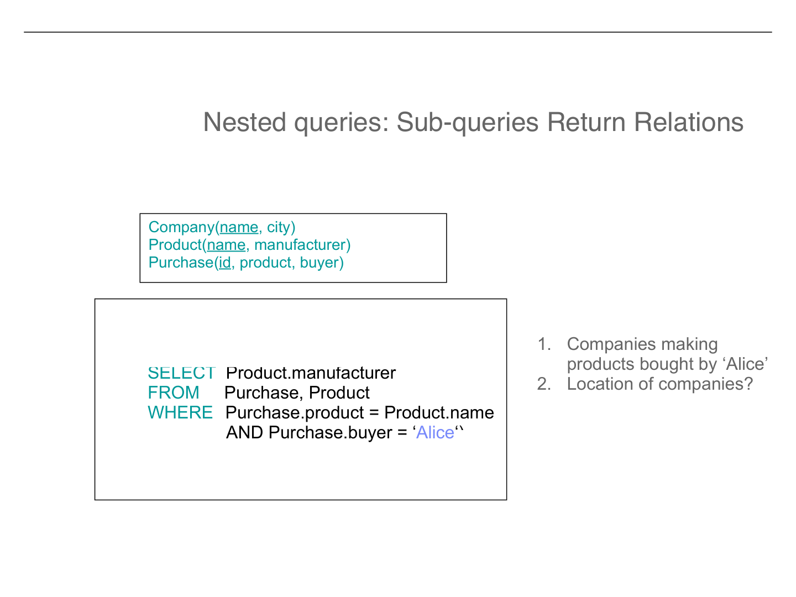
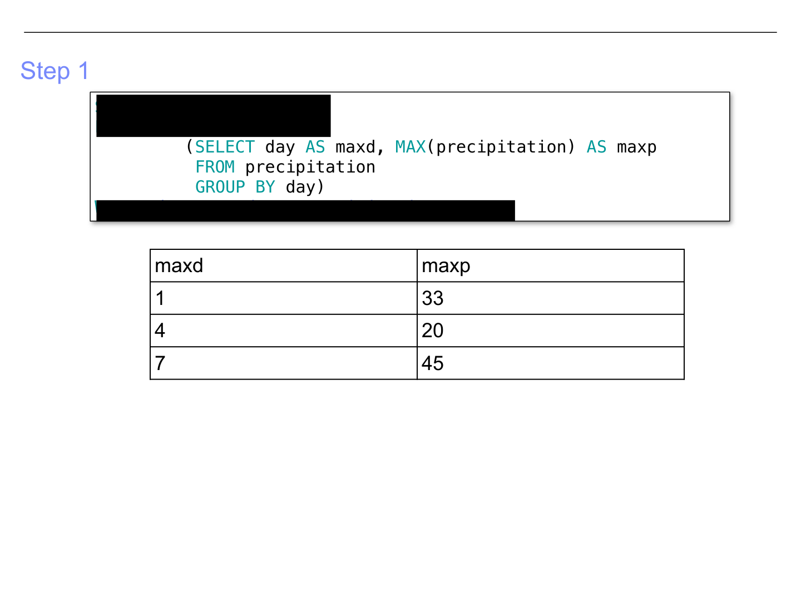

Nested Queries and Subqueries
Building complex answers by composing simple queries inside one another
1. SQL is Compositional
One of the most powerful properties of SQL is something mathematicians and programmers cherish: compositionality. Every SQL query takes in a relation (a table, or more precisely, a multiset of tuples) and produces a relation as output. Because the input type and output type are the same — both are relations — you can feed the output of one query directly into another query, just like nesting function calls in mathematics or programming.

In mathematical notation, this looks like f(g(...(x))). The innermost function x produces a result, which is consumed by g, whose result is consumed by f, and so on. In SQL, this means you can write a SELECT statement inside another SELECT statement — a subquery (also called a nested query). The inner query runs first, produces a relation, and the outer query uses that relation as if it were just another table.
This property is not just elegant — it is deeply practical. Many real-world questions cannot be answered with a single flat query. Nesting lets you break a complex question into manageable subproblems, solve each one, and then combine the results. The rest of this section is devoted to understanding how this works in practice.
2. Sub-queries Return Relations
Let us start with a concrete example. Suppose we have three tables describing a simple e-commerce scenario:
Company(name, city)— each company has a name and is located in a cityProduct(name, manufacturer)— each product has a name and is made by a manufacturer (a company)Purchase(id, product, buyer)— each purchase records which product was bought by which buyer

Problem
Find the cities of companies that manufacture products bought by Alice.
This question spans all three tables. Alice's purchases live in Purchase, the manufacturers of those products live in Product, and the cities of those manufacturers live in Company. A flat join across all three tables would work, but there is a more intuitive way to think about it: break the problem into two steps.
First, we join Purchase and Product to find the manufacturers of everything Alice purchased:
SELECT Product.manufacturer FROM Purchase, Product WHERE Purchase.product = Product.name AND Purchase.buyer = 'Alice'
This inner query produces a relation — a list of manufacturer names. It might return something like {'GizmoWorks', 'Canon', 'Hitachi'}. Now we need the cities where those companies are located.
We wrap the inner query inside the outer query using the IN keyword:
SELECT Company.city FROM Company WHERE Company.name IN (SELECT Product.manufacturer FROM Purchase, Product WHERE Purchase.product = Product.name AND Purchase.buyer = 'Alice')

How IN works with a subquery
The IN operator checks whether a value appears anywhere in the result of a subquery. Conceptually, Company.name IN (subquery) means: "Is this company's name one of the values returned by the subquery?" The database evaluates the inner query first, collects its results into a set, and then the outer query filters Company rows by checking membership in that set.
This is equivalent to writing a three-way join across Company, Product, and Purchase, but the nested version often reads more naturally because it mirrors the way you would think through the problem step by step.
3. ALL, ANY, and EXISTS
The IN operator is the simplest way to use a subquery, but SQL provides three more powerful operators that let you express richer comparisons against subquery results: ALL, ANY, and EXISTS.

| Operator | Meaning | Example |
|---|---|---|
s > ALL R |
s is greater than every value in the result set R |
Find products more expensive than all Gizmo-Works products |
s < ANY R |
s is less than at least one value in R |
Find products cheaper than some Gizmo-Works product |
EXISTS R |
True if R contains at least one row |
Find "copycat" products made by a competitor under the same name |
ALL — Compare against every value
Suppose you want to find products whose price is higher than the price of every product made by Gizmo-Works. The ALL keyword makes this straightforward:
Example: More expensive than ALL Gizmo-Works products
SELECT name FROM Product WHERE price > ALL (SELECT price FROM Product WHERE manufacturer = 'Gizmo-Works')
The subquery returns the set of all prices for Gizmo-Works products — say {20, 35, 50}. The outer query then keeps only those products whose price is greater than every value in that set, meaning greater than 50 (the maximum). In effect, > ALL is equivalent to "greater than the maximum," but it reads more declaratively.
ANY — Compare against at least one value
The ANY keyword is the existential counterpart of ALL. Where ALL requires the comparison to hold for every value in the subquery result, ANY requires it to hold for at least one. So price < ANY (subquery) means "the price is less than at least one value returned by the subquery" — effectively, less than the maximum.
EXISTS — Does the subquery return anything?
EXISTS is different from ALL and ANY because it does not compare a specific value against the subquery results. Instead, it simply checks whether the subquery returns at least one row. If the subquery result is non-empty, EXISTS evaluates to true.
Example: Find "copycat" products
A copycat product is one where two different manufacturers make a product with the same name. We can find them with:
SELECT p1.name FROM Product p1 WHERE EXISTS (SELECT * FROM Product p2 WHERE p1.name = p2.name AND p1.manufacturer <> p2.manufacturer)
Note the <> operator, which means "not equal to" in SQL. For each product p1, the subquery checks whether there is some other product p2 with the same name but a different manufacturer. If such a p2 exists, the product is a copycat.
Scoping of variables
Pay careful attention to the scoping in the EXISTS example above. The subquery references p1.name and p1.manufacturer, which are defined in the outer query. This is legal — an inner query can reference variables from the outer query that contains it, just like an inner function in programming can reference variables from its enclosing scope. This is called a correlated subquery, and it is the subject of the next section.
4. Correlated Subqueries
In the examples so far, the inner subquery could in principle be evaluated once, independently of the outer query. The subquery "find all Gizmo-Works prices" does not depend on which row the outer query is currently examining. But in the EXISTS copycat example, the inner query references p1 from the outer query. This means the inner query must be re-evaluated for each row of the outer query — because its result depends on which outer row is being considered. This is a correlated subquery.

Consider a more complex example using a single table:
Product(name, price, category, maker, year)
Problem
Find products that are more expensive than ALL products made by the same manufacturer before 1972.
This is a self-referential question — we are comparing products against other products from the same maker. The subquery must know which maker we are currently looking at, so it needs to reference the outer query:
The correlated query
SELECT x.name, x.price FROM Product x WHERE x.price > ALL (SELECT y.price FROM Product y WHERE x.maker = y.maker AND y.year < 1972)
Here, x is the outer alias and y is the inner alias — both refer to the same Product table, but they represent different roles. For each product x, the subquery finds all prices of products made by x's manufacturer before 1972. If x's price exceeds all of those, it passes the filter.
Correlated subqueries are powerful but come with a performance caveat. Because the inner query must conceptually be re-executed for every row of the outer query, they can be expensive on large tables. Modern query optimizers often rewrite correlated subqueries into equivalent joins behind the scenes, but this is not always possible. Understanding the performance implications of correlation is important when writing production SQL.
5. Aggregates Inside Nested Queries
Because SQL is compositional, you are not limited to using simple selects in your subqueries. You can use aggregation functions like MAX, MIN, COUNT, SUM, and AVG inside nested queries as well. This opens up a huge range of analytical questions that would be difficult or impossible to express with flat queries alone.

The general strategy for writing complex nested queries with aggregates is:
- Break the question into subproblems. What intermediate result do you need? Can you write a standalone query for it?
- Go back to definitions. What does each SQL clause do? What shape of data does it produce? Use that knowledge to assemble the pieces.
Let us walk through a detailed example.
The Precipitation Example
Suppose we have a table recording daily precipitation measurements at various weather stations:
Precipitation(station_id, day, precipitation)
| station_id | day | precipitation |
|---|---|---|
| 122 | 1 | 1.5 |
| 122 | 4 | 2.1 |
| 122 | 7 | 0.8 |
| 191 | 1 | 0.9 |
| 191 | 4 | 1.2 |
| 191 | 7 | 1.4 |
Problem
Find the stations that recorded the highest daily precipitation on any given day. In other words, for each day, which station had the most rain?
This is a classic "find the row with the maximum value per group" problem, and it is surprisingly tricky to express in SQL without subqueries. The difficulty is that GROUP BY with MAX gives you the maximum precipitation per day, but it does not directly tell you which station achieved that maximum. You need to link the aggregate result back to the original rows. This is where nesting shines.
First, we write a subquery that groups by day and computes the maximum precipitation:
SELECT day AS maxd, MAX(precipitation) AS maxp FROM Precipitation GROUP BY day
This produces a small derived table with two columns: maxd (the day) and maxp (the highest precipitation recorded on that day). For our sample data, this would return: day 1 with max 1.5, day 4 with max 2.1, and day 7 with max 1.4.

Notice that this subquery produces a perfectly valid relation. It has rows and columns, just like any table. Now we can use it as if it were a table in a FROM clause — this is sometimes called a derived table or inline view.
Now we join the original Precipitation table with the derived table from Step 1. We match on both the day and the precipitation value, so we recover the station_id that achieved the maximum:
SELECT p.station_id, p.day, p.precipitation FROM Precipitation p, (SELECT day AS maxd, MAX(precipitation) AS maxp FROM Precipitation GROUP BY day) m WHERE p.day = m.maxd AND p.precipitation = m.maxp
The WHERE clause ensures we only keep rows from the original table where the day matches and the precipitation equals the daily maximum. This effectively "looks up" which station achieved the highest reading each day.

For our sample data, the result is:
| station_id | day | precipitation |
|---|---|---|
| 122 | 1 | 1.5 |
| 122 | 4 | 2.1 |
| 191 | 7 | 1.4 |
Station 122 had the highest precipitation on days 1 and 4, while station 191 had the highest on day 7. The nested query approach made this problem manageable by decomposing it: first compute the per-day maximums, then find which rows match those maximums.
Why not just use GROUP BY alone?
A common mistake is to write SELECT station_id, day, MAX(precipitation) FROM Precipitation GROUP BY day. This is invalid in standard SQL (and most databases will reject it) because station_id is not in the GROUP BY clause and is not inside an aggregate function. The database does not know which station_id to return for each group. The subquery approach solves this cleanly by separating the "compute the max" step from the "find the matching row" step.
6. When Nested Queries Go Wrong — The Figma Postmortem
Everything we have discussed so far has been about the logical correctness of SQL queries — how to express the right question. But in production systems, how the database executes your query matters just as much. A logically correct query can still bring down a service if the query planner chooses a bad execution strategy. The Figma PostgreSQL incident of January 2020 is a sobering real-world illustration.

What happened?
On January 21–22, 2020, Figma experienced a significant service disruption. The root cause was a long-running, expensive query that overwhelmed their PostgreSQL database.
Here is the chain of events, and why it connects directly to the SQL concepts we have been studying:
PostgreSQL maintains internal statistics about table sizes, value distributions, and index selectivity. These statistics help the query planner decide how to execute a query — whether to use an index scan, a sequential table scan, a hash join, a nested loop join, and so on. When the underlying data changed, the statistics became stale or shifted in a way that misled the planner.
Based on the inaccurate statistics, the planner estimated that a certain execution strategy would be cheap. In reality, it was catastrophically expensive. The plan involved full table scans — reading every row in large tables — combined with writing massive amounts of intermediate data to temporary buffers on disk.
PostgreSQL uses a process called autovacuum to clean up dead rows and update statistics. An existing backlog in this process meant the statistics were even more out of date than usual, compounding the planner's mistakes. The expensive query consumed so many resources that it blocked other operations, creating a cascading failure.
Figma resolved the issue by upgrading from PostgreSQL 9 to PostgreSQL 11. The newer version had a significantly improved query planner that made better decisions about execution strategies, along with better autovacuuming behavior that kept statistics more current.
Why this matters for nested queries
Nested queries and subqueries give the query planner more choices — and more opportunities to make poor decisions. A correlated subquery, for example, could be executed naively (re-running the inner query for every outer row) or cleverly rewritten as a join. The planner makes this decision based on statistics. When those statistics are wrong, the planner might choose the naive approach on a table with millions of rows, turning a query that should take milliseconds into one that runs for minutes and saturates the disk. Understanding SQL execution — not just SQL syntax — is essential for anyone working with data at scale.
Key Takeaways
- ✓ SQL is compositional. Queries take relations in and produce relations out, so you can nest queries inside one another like function calls:
f(g(x)). - ✓ Subqueries return relations. You can use a subquery anywhere SQL expects a set of values — in a
WHERE ... INclause, in aFROMclause (as a derived table), or as an operand toALL,ANY, orEXISTS. - ✓ IN, ALL, ANY, EXISTS are the four main operators for using subquery results.
INchecks membership,ALLandANYperform universal and existential comparisons, andEXISTSchecks for non-emptiness. - ✓ Correlated subqueries reference columns from the outer query, making the inner query dependent on the current outer row. They are powerful but can be expensive.
- ✓ Aggregates inside subqueries let you compute summaries (MAX, MIN, AVG, etc.) as intermediate results and then join them back to find the associated rows.
- ✓ Break complex problems into steps. Write the inner query first, verify it produces the right intermediate result, then wrap it in the outer query. This is both a debugging strategy and a design pattern.
- ✓ Execution matters. The Figma postmortem shows that logically correct queries can still cause outages if the query planner makes bad decisions. Understanding how nested queries are executed — not just what they mean — is critical for production systems.